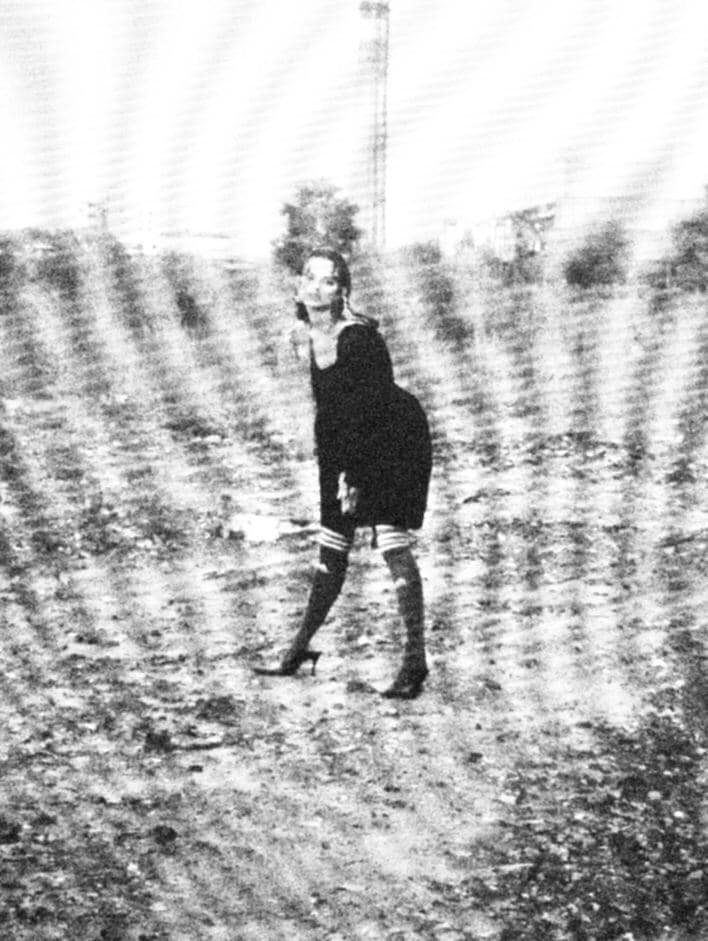
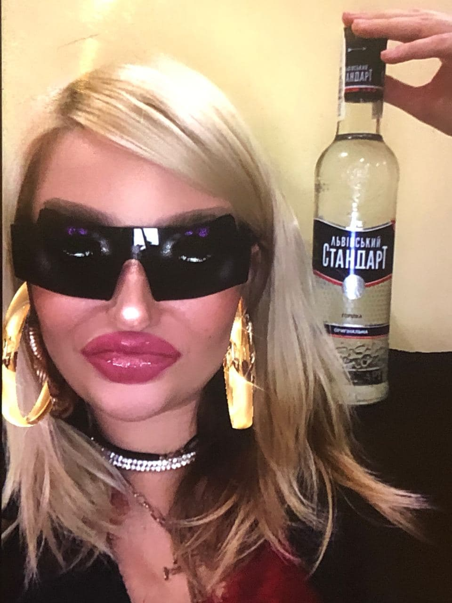
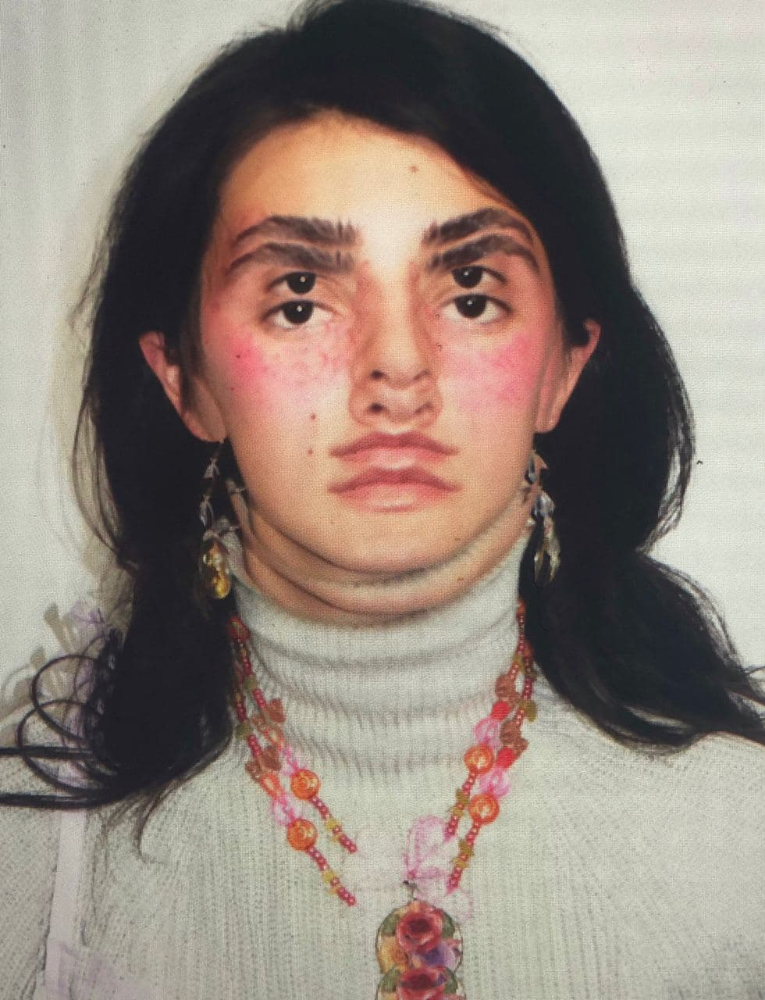
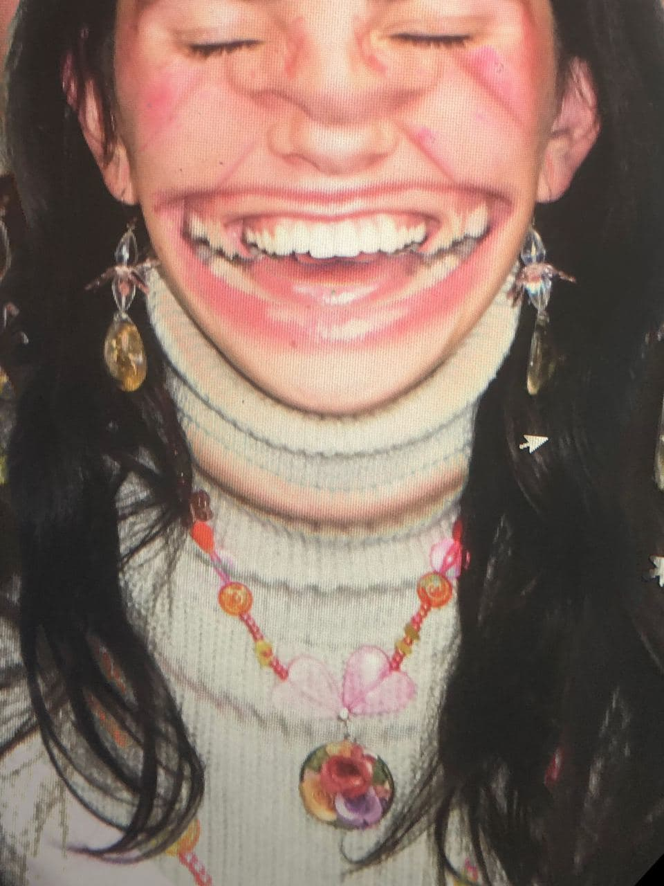
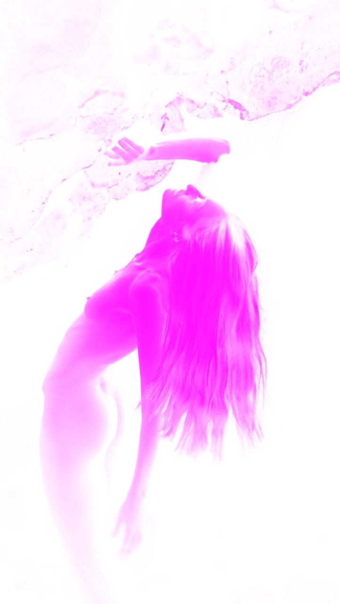

WXCPO
Works
Contacts
Art Direction for fashion. Visual communication. Photography. Management+Artist
xXx

Озброєні і небезпечні. Promo

Kissel`
 
FNTZMGRIA

Contacts
wxcpo404@gmail.com
instagram
Andrii Rusanovych is a young Ukrainian media artist who uses video, photo and painting as his medium. Born in Ivano-Frankivsk, he is now living in Lviv where he studies Graphic Design in Lviv National Academy of Art. His method is combining physical and digital medium to create unusual and unexpected effects in his visual communication with a viewer. Now, the young artist is launching a DIY jewelry brand KISSEL with his partner Anastasia Dyushez. Their first brand book is inspired by 2000s teen esthetics, bright colors and unusual shapes. R. is also working as an assistant in developing new brand SLVC that will be launched in Kyiv this autumn. The main focus of the brand is fully knitted pieces for woman in a huge variety of colors. It’s not his last project this year.